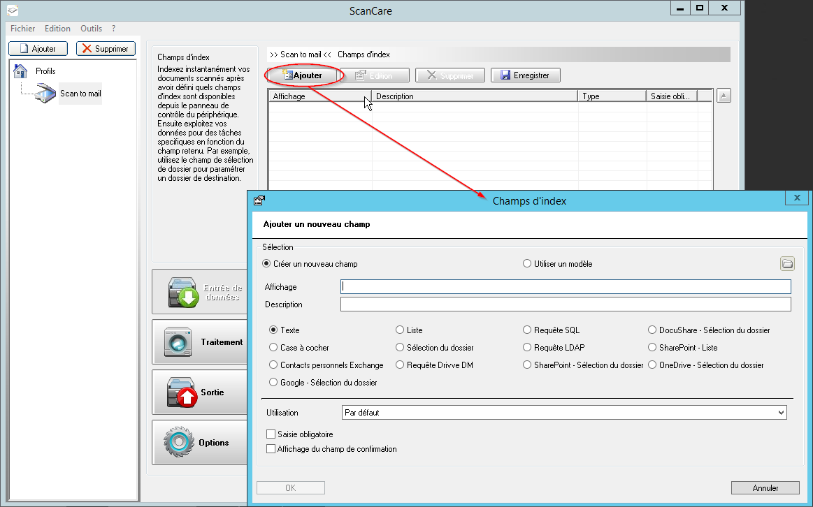

Configurer l'entrée de données d'un profil
Principe
Configurer l' Entrée de données consiste à définir les champs figurant dans le formulaire mis à disposition des utilisateurs lors du lancement de la numérisation.
Accéder à l'interface de configuration
Pour accéder à l'interface de configuration des Entrées de données :
-
depuis l'interface ScanCare, cliquez, dans la colonne de gauche, sur le profil à paramétrer ;
-
dans la fenêtre de droite, cliquez sur le bouton ;
-
dans l'interface Champs d'index affichée, cliquez sur le bouton Ajouter pour paramétrer un champ d'index :

→ Vous accédez à l'interface Champs d'index qu'il convient de compléter.
Créer et configurer un champ d'index
Outre les données trouvées dans le document lors de l'indexation (pour des documents de type textuel), Watchdoc ScanCare® met à disposition de l'utilisateur un formulaire lui permettant de saisir des données complémentaires.
Ces métadonnées saisies par l'utilisateur avant la numérisation sont enregistrées dans un fichier associé au document numérisé puis indexées afin de faciliter la recherche et la gestion du document numérisé.
Vous pouvez définir un champ d'index en le créant ex-nihilo ou en le créant à partir d'un modèle.
-
Cochez Créer un champ pour créer un champ ex-nihilo,
-
Affichage : saisissez dans ce champ l'intitulé du champ exploité ;
-
Description : si besoin, saisissez une description du contenu du champ.
-
-
Cochez Utiliser un modèle puis cliquez sur l'icone
 pour parcourir le réseau à la recherche d'un modèle. Par défaut, les modèles sont des fichiers au format .xml enregistrés dans le dossier C:\Program Files (x86)\Doxense\ScanCare\Templates\Fields du serveur sur lequel est installé Watchdoc ScanCare®.
pour parcourir le réseau à la recherche d'un modèle. Par défaut, les modèles sont des fichiers au format .xml enregistrés dans le dossier C:\Program Files (x86)\Doxense\ScanCare\Templates\Fields du serveur sur lequel est installé Watchdoc ScanCare®. -
Dans la liste, cochez le type du champ, puis remplissez les champs de la zone Utilisation.
Divers types de champs sont disponibles. Les paramètres à définir varient en fonction du type de champ sélectionné :
| Type de champ | Explication | Utilisation |
| Texte | Champ permettant la saisie d'un texte à l'aide du clavier tactile intégré au périphérique ou d'un clavier extérieur. |
Dans la liste déroulante, - sélectionnez la valeur Par défaut pour afficher un champ vierge ; - sélectionnez une autre valeur (adresse mail, sujet, corps du message) à exploiter dans ce champ. |
| Case à cocher | Bouton radio permet de choisir entre deux valeurs ( Vrai ou Faux ) pour autoriser, ou non, la génération d'un fichier XML correspondant au document numérisé. Cette valeur est vérifiée par les applications tierces pour le traitement ultérieur du document. | |
| Contacts personnels Exchange |
Champ donnant accès, depuis l'écran du périphérique, à la liste de contacts Microsoft® Exchange des usagers afin d'y sélectionner une adresse mail. |
|
| Liste | Champ proposant une liste de valeurs prédéfinies (par exemple, type de documents ou service d'appartenance de l'utilisateur, etc.) | Dans la liste déroulante, sélectionnez le champ à afficher dans la zone de texte. |
| Sélection de dossier |
Champ permettant de parcourir le réseau pour définir le dossier dans lequel est enregistré le document numérisé. Il existe deux types de sélection de dossier : sélection dynamique : permet la sélection de tous les sous-dossiers dépendant d'un dossier racine, l'avantage étant que tout nouveau dossier peut être sélectionné ; sélection statique : permet la sélection de dossiers prédéfinis. Note : l'entrée Sélection de dossier ne peut être proposée que si le type de sortie Fichier est autorisé et s'il y a une correspondance entre la configurations des documents en entrée et en sortie.. |
La Sélection de Dossier est disponible lorsque les documents proviennent des applications Google Drive®, de SharePoint®, de DocuShare® ou de OneDrive®. Pour autoriser la sélection dans Google Drive®, de SharePoint®, de DocuShare® ou de OneDrive®,, une source de données correspondante doit être paramétrée dans la solution (Menu Outils>Sources de données). |
| Requête Drivve DM | Champ permettant la prise en charge des documents numérisés dans l'application Drivve|DM®. | Pour autoriser l'exploitation de données Drivve | DM®, dans Google Drive®, de SharePoint®, de DocuShare® ou de OneDrive®, une , une source de données correspondante doit être paramétrée dans la solution (Menu Outils>Sources de données). |
| Requête SQL |
Champ permettant la connexion avec une base de données de type SQL ou LDAP située sur le réseau afin d'y collecter des informations relatives à l'utilisateur. |
Pour permettre à Watchdoc ScanCare® de questionner une source SQL, une source de données ODBC doit être paramétrée dans la solution (Menu Outils>Sources de données). |
| Requête LDAP | Pour permettre à Watchdoc ScanCare® de questionner une source LDAP, une source de données LDAP doit être paramétrée dans la solution (Menu Outils>Sources de données). | |
| Liste Sharepoint |
Champ permettant la création d'une liste prédéfinie Sharepoint dans un profil de numérisation spécifique. Note : pour créer une liste Sharepoint dans un profil de numérisation, les conditions suivantes doivent être remplies : le profil de numérisation contient un champ Sharepoint ; la bibliothèque de documents sélectionnée contient un champ de liste. |
Les différents types de champs ajoutés dans le formulaires doivent être configurés à l'aide des paramètres suivants :
| Champ | Fonction |
| Usage | Permet de préciser l''objet du champ et la manière de le remplir. |
| Obligatoire | Permet de rendre le champ obligatoire. |
| Afficher la confirmation | Permet d'afficher une boîte de confirmation de l'information saisie dans le champ initial (par exemple, pour vérifier la validité d'un mot de passe ou d'une adresse mail). |
| Valeur par défaut |
Permet de saisir une valeur par défaut ou de sélectionner une variable disponible dans la boîte des fonctions supplémentaires (en cliquant sur le bouton de droite). |
| Clavier du périphérique / Clavier Watchdoc ScanCare |
Permet d'utiliser les claviers des constructeurs suivants : T • Sharp : clavier du périphérique et clavier Watchdoc ScanCare • Xerox : clavier Watchdoc ScanCare Note: Les séries Xerox 52xx, 56xx and 72xx disposent d'un affichage monochrome (résolution : 640x240 Pixel). Ce périphérique ne supporte que le clavier du périphérique. • Toshiba/OKI : clavier Watchdoc ScanCare • Kyocera : clavier du périphérique • Samsung : clavier du périphérique • Fujitsu : clavier du périphérique • Canon ScanFront : clavier Watchdoc ScanCare |
| Recherche |
Cette fonction, uniquement disponible si l'option "Utiliser le clavier Watchdoc ScanCare est activée, indique le nombre de caractères au-delà duquel la recherche automatique doit être lancée. |